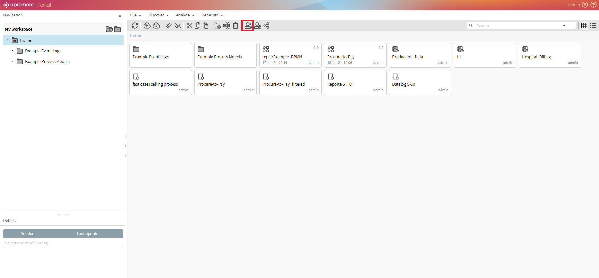
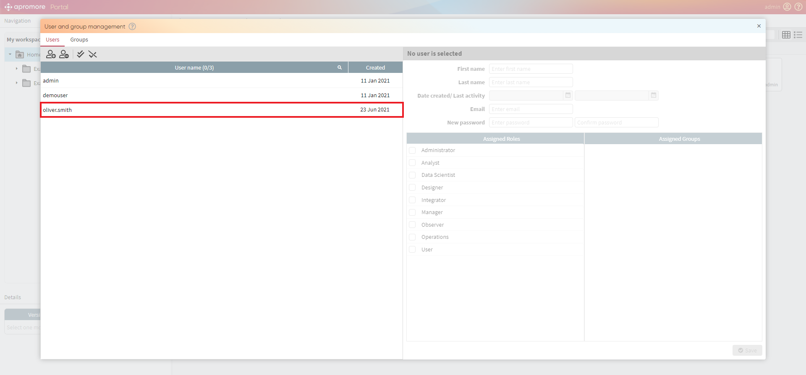
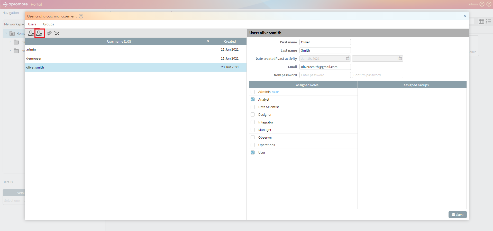
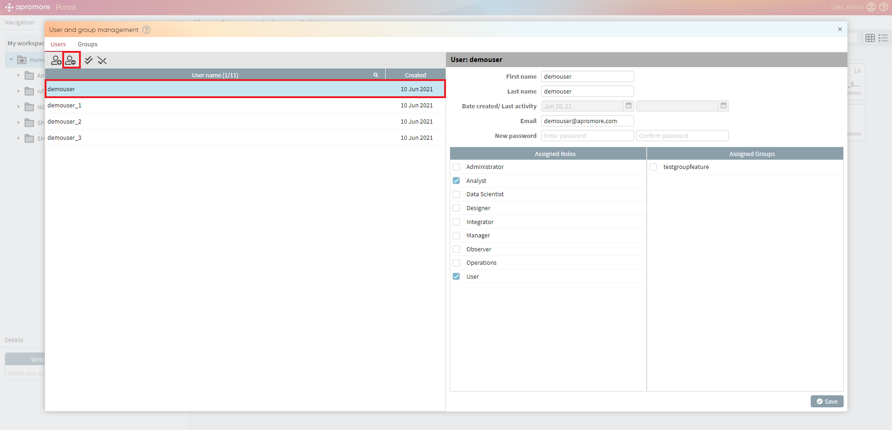
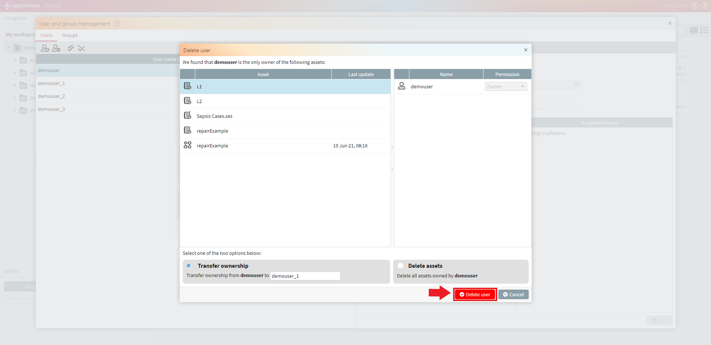
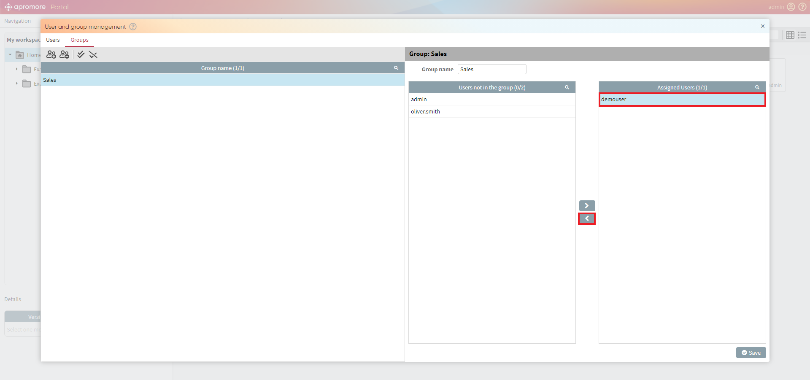
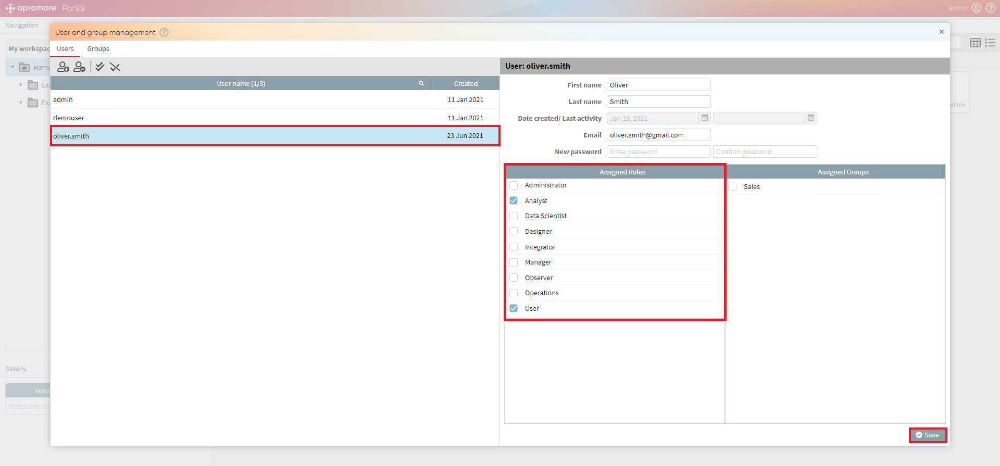

Manage users and groups
Users and groups management functionality allows us to grant permissions to users for either using features or different artifacts. Each user can belong to a group or can be associated with a role. A Role is an attribute of the user. A Group is a set of users and is about access rights to different folders/files (e.g. as a member of the group Sales I can only access files related to the Sales Department).
Note
Only a user with administrator rights can access the Manage users and groups functionality
Click on the Manage users and groups button.

Once the User and group management dialog opens up, we can create/remove a user, create/remove a group and assign users different roles and groups.
Create new user
To create a new user, click on the create new user button.

Enter all the details in the Create new user dialog and click on Create button.

The user will be created.

Remove User
To delete a user, select the user you want to delete and click on Remove user button.

Click on OK to delete the user.

In case we don`t want to lose files that the user had in his workspace we can transfer them to another user.
To do so, select the user we want to delete and click on Remove user button.

To transfer files, choose Transfer ownership option in the bottom left corner of the Delete user window, which appears right after we click OK in the confirmation window.


Specify the name of the user to whom we want to transfer the files.

Click Delete user to finalize the process.

If we looked through the files and didn`t find them necessary, we can remove them by choosing the Delete assets option.

If the user didn`t have any logs/folders in his workspace, he will be deleted right after we click on OK in the confirmation window.
Note
If the user didn`t have any logs/folders in his workspace, he will be deleted right after we click on OK in the confirmation window.
Create new group
To create a new group, click on Create new group button in the Groups section.

Enter the name of the group and click on Create.

The group will be created. To add users to a group, select the group. On the right-hand side, we can select the user and click on “>” button to add the users to the group.

To remove a user from the group, select the user in Assigned Users section and click on “<” button.

Remove group
To remove a group, select the group and click on the Remove group button.

Assign roles to a user
To assign roles to a user, select the user and choose a role in Assigned Roles section and click on Save.

Add a user to a group
To add a user to a group, select the user and choose a group in the Assigned Groups section and click on Save.